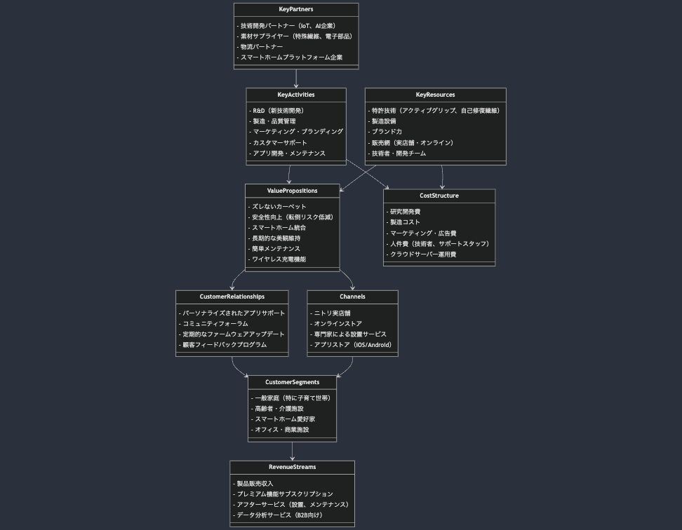

ニトリ ゼロスリップカーペット企画書
①テーマ
革新的固定システムとスマート機能を搭載した、ズレないカーペット
②商品名
ニトリ・ゼロスリップカーペット（Nitori Zero-Slip Carpet: NZSC）
③商品説明
ニトリ・ゼロスリップカーペット（NZSC）は、カーペットのズレというストレスを完全に解消する革新的な製品です。主な特徴は以下の通りです：
-
アクティブグリップシステム：
- マイクロサクションカップ技術を用いた革新的な固定方式
- 電気制御により、必要に応じて吸着力をON/OFF可能
-
エッジロックフレーム（Nスナップ接続システム採用）：
- カーペットの縁を固定する軽量フレーム
- 簡単に取り付け・取り外しが可能で、洗濯時にも便利
-
スマート張力調整機能：
- 内蔵されたマイクロモーターにより、カーペットの張りを自動調整
- しわや波打ちを防ぎ、常に美しい状態を維持
-
自己修復繊維技術：
- 圧力や摩擦でつぶれた繊維が自動的に元の状態に戻る
- 常に新品同様の見た目と触感を維持
-
統合型ワイヤレス充電機能：
- カーペットの特定エリアに埋め込まれたワイヤレス充電コイル
- スマートフォンなどのデバイスを置くだけで充電可能
-
スマートクリーニング通知：
- 内蔵センサーで汚れや埃を検知し、クリーニングのタイミングを通知
- アプリと連携し、最適なメンテナンス計画を提案
④解決すべき不平不満不便
- カーペットが頻繁にズレて躓く危険がある
- ズレたカーペットを直すのが面倒
- 家具を動かすとカーペットがずれる
- カーペットの端が波打ってつまずく
- 頻繁な使用で特定の箇所が変形する
- カーペットの下にホコリがたまりやすい
- 充電ケーブルがカーペットの見た目を損ねる
⑤上記の規模感
⑥解決方法
-
アクティブグリップシステム：
- 微細な吸盤構造を持つ特殊素材をカーペット底面に配置
- 電気信号でON/OFFを制御し、必要時のみ強力に固定
-
エッジロックフレーム：
- 軽量かつ丈夫なカーボンファイバー製フレーム
- Nスナップ接続システムで簡単に取り付け・取り外し可能
-
スマート張力調整機能：
- エッジに配置されたマイクロモーターが自動で張力を調整
- AI制御により、使用状況に応じた最適な張力を維持
-
自己修復繊維技術：
- 形状記憶ポリマーを用いた特殊繊維
- 熱や圧力で変形しても、時間経過で元の状態に復元
-
統合型ワイヤレス充電機能：
- Qi規格対応の薄型充電コイルをカーペットの一部に内蔵
- 充電スポットを視覚的に示すLEDインジケーター付き
-
スマートクリーニング通知：
- 光学センサーと匂いセンサーを内蔵し、汚れや埃を検知
- スマートフォンアプリと連携し、クリーニング通知や履歴管理
⑦優位性・差別化ポイント
-
完全なズレ防止と簡単な移動の両立：
- 必要時のみ固定されるアクティブグリップシステムにより、使い勝手を損なわない
-
高い安全性と利便性：
- ズレによる転倒リスクを大幅に低減し、特に高齢者や子供のいる家庭に最適
-
長期的な美観の維持：
- 自己修復機能とスマート張力調整により、新品の状態を長期間キープ
-
スマートホーム統合：
- IoT対応で家全体のスマートホームシステムと連携可能
- 音声アシスタントとの連携で、音声コマンドによる制御も可能
-
環境への配慮：
- 長寿命設計とリサイクル可能素材の使用による環境負荷低減
- 省エネ設計で電力消費を最小限に抑制
-
ニトリならではの高いコストパフォーマンス：
- 革新的技術を搭載しながらも、大量生産による低コスト化を実現
- 従来のカーペットとの価格差を最小限に抑えた手頃な価格設定
⑧ビジネスモデル概要
以下のビズグラムは、ニトリ・ゼロスリップカーペット（NZSC）のビジネスモデルを視覚的に表現しています：

このビジネスモデルの主な特徴：
- 多様な顧客セグメント：一般家庭、高齢者施設、スマートホーム愛好家、オフィスなど
- 革新的な価値提案：ズレ防止、安全性向上、スマート機能統合
- 複数の販売チャネル：実店舗、オンライン、専門家による設置サービス
- 継続的な顧客関係：アプリサポート、コミュニティ、定期アップデート
- 多様な収益源：製品販売、サブスクリプション、アフターサービス
- 重要なリソース：特許技術、製造設備、ブランド力
- 主要活動：R&D、製造、マーケティング、カスタマーサポート
- キーパートナー：技術企業、素材サプライヤー、スマートホームプラットフォーム
- コスト構造：研究開発、製造、マーケティング、人件費
このモデルにより、NZSCは単なる製品販売ではなく、継続的なサービス提供と顧客との関係構築を重視したビジネスとして展開されます。
⑨商品名・参考企業名
- Roomba（iRobot）- 自動運転技術とセンシング技術
- Deebot（Ecovacs）- AI搭載の自動掃除機能
- LIFX Tile（LIFX）- スマート照明タイル
- Nanoleaf Canvas（Nanoleaf）- モジュラー型スマートライトパネル
- PowerKiss Wireless Charging（PowerKiss）- 家具統合型ワイヤレス充電
ニトリ・ゼロスリップカーペット（NZSC）は、カーペットのズレという日常的なストレスを完全に解消するだけでなく、スマートホームの新たな基盤となる可能性を秘めた革新的製品です。従来のカーペットの概念を覆し、安全性、利便性、美観の全てを高次元で実現します。ニトリの強みである「お、ねだん以上。」の価値提供と最先端技術の融合により、カーペット市場に革命をもたらし、新たな生活スタイルを創造します。